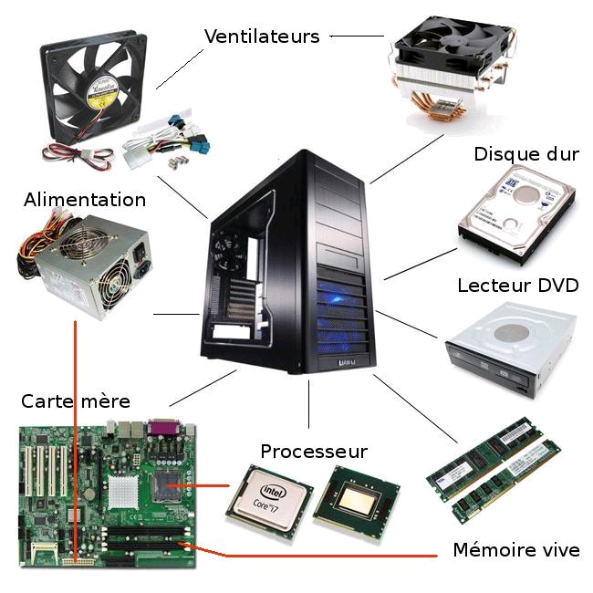

L'Unité Centrale
Elément principal d'un Ordinateur , l'Unité Centrale se matérialise par un boîtier , qui recèle tous les composants essentiels d'un Ordinateur exceptés le clavier , le moniteur et la souris : à savoir la carte mère et son processeur , le disque dur , les lecteurs et graveur de CD/DVD et de nombreux autres composants. Elle peut être sous forme de tour comme sur la photo ou à plat comme dans la salle d'informatique.
